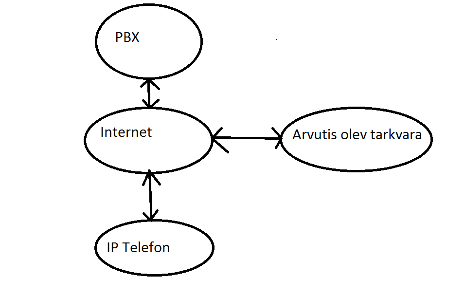

| Töö tegijate nimed: |
| Arvi Kangas |
| Margus Pärt |
| Töö tegemise kuupäev: Thu Apr 10 16:29:43 2014 |
| Seadistuse variant 3 | IP-telefon | Arvutitelefon |
| Telefoninumber | 26 | 25 |
| seadistuse ekraanipilt | |
|
| Selgitada seadistuse eesmärke | 1.) saada luua ühendust samas alamvõrgus olevate seadmete vahel | |
|  | ||
Küsimus 2: Millise käsuga saab kumbki osapool kõne ajal videost loobuda?
Vastus:
Stop video / Stop sending your video
Küsimus 2: Kuidas töötab tingimusteta suunamine?
Vastus:
Olen tubli. *7229#
Küsimus 3: Kuidas töötab tingimustega suunamine?
Vastus:
Ütleb, et helisatav pole kättesaadav.
Küsimus 2: Võrrelda video kvaliteeti Frame Rate: 5 frames/second ja Frame Rate: 15 frames/second.
Vastus:
Suurema frame ratega on vähem hakkiv/ujuv pilt
| Suurim võimalik | eraldusvõime hinnang | eraldusvõime | kaadrisagedus | sisu bitikiirus | Arvutada pakkimata video edastuskiirus |
| Vaga hea teravus | 2592x1944 | 10 | 602400 kb/s | 2592*1944*10*12 = 608083200 b/s = 608083 kb/s | |
| VGA | eraldusvõime hinnang | eraldusvõime | kaadrisagedus | sisu bitikiirus | Arvutada pakkimata video edastuskiirus |
| Talutav, aga tervus on vahem kui eelmisel | 640x480 | 30 | 90000 kb/s | 640*480*30*12 = 110592000 b/s = 110592 kb/s | |
| CIF | eraldusvõime hinnang | eraldusvõime | kaadrisagedus | sisu bitikiirus | Arvutada pakkimata video edastuskiirus |
| Ysna jama kvaliteet | 352x288 | 30 | 30700 kb/s | 352*288*30*12 = 36495360 b/s = 36495 kb/s | |
| QCIF | eraldusvõime hinnang | eraldusvõime | kaadrisagedus | sisu bitikiirus | Arvutada pakkimata video edastuskiirus |
| Eelistan tigukirja | 176x144 | 30 | 8700 kb/s | 176*144*30*12 = 9123840 b/s = 9124 kb/s | |
Õppisime kasutama IP telefoni ja arvuti IP telefoni rakendust, IP telefoni koode.
Mida madalama video kvaliteediga oli koodeks, seda suurem oli video pakkimise protsent, nagu näha tulemustest.